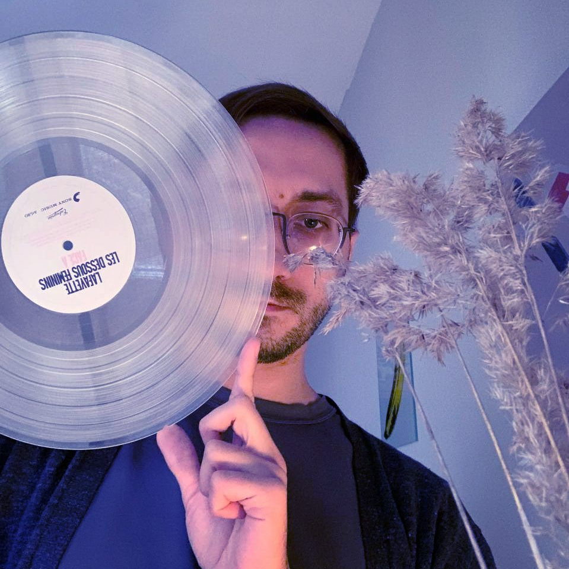

Hi! I am
Gleb Likhobabin,
a social entrepreneur who loves to blend
social change with cutting-edge ❮tech❯ and
cultural trends.
I am a co-founder of the
Collab
team,
where we help businesses use a human-centered
approach for better customer experience and responsibility.
We also build impactful social programs that are scalable and evidence-based.
I am an enthusiast of open-source products,
a fan of theory of change, and an advocate for humanism.
Competencies: sustainability, theory of change, social impact,
app development, scalability, project management, digital transformation.
W O R K
2020-now Co-founder at Collab, a union of creatives
with impact in mind and humanity at heart.
> become our client or just a friend!
2020-2022 Leading author, then CEO at Strength of Community
program and its products, like “RSA Game” or Community
Diagnostics Tool. We helped build 600 school communities
in two years, empowered 901,000 people and helped
raise more than $2,500,000 for education.
> read our wonderful 2021-22 Impact Report!
2018-2020 Co-founder and CTO at Geek Teachers,
a prominent educational movement for empowering millennial
teachers and a host for more than six education festivals
(think of it as a child of Coachella and BETT), with fellow
co-founders Mariia Plotkina and Arina Nuriakhmetova.
2011-2018 Teacher for children with disabilities.